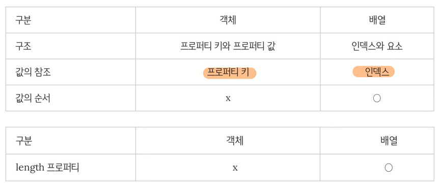

변수
변수란 하나의 값을 저장하기 위해 확보한 메모리 공간 자체 또는 그 메모리 공간을 식별하기 위해 붙인 이름
값위 위치를 가리키는 상징적인 이름
원시값
원시타입의 값, 즉 변경 불가능한 값이다
원시 값을 변수에 할당하면 변수에는 실제 값이 저장된다 / 하지만 객체를 변수에 할당하면 변수에는 참조 값이 저장된다
변경이 불가능하다는 것은 변수가 아니라 값에 대한 진술이다 / 상수는 재할당이 금지된 변수일 뿐이다
문자열은 유사배열이므로 배열과 유사하게 인덱스를 사용하여 각 문자에 접근할 수 있지만, 원시값이므로 변경할 수 없다
객체
객체는 프로퍼티의 개수가 정해져 있지 않으며 동적으로 추가 및 삭제할 수 있다
객체는 변경 가능한 값이다
객체를 할당한 변수가 기억하는 메모리 주소를 통해 메모리 공간에 접근하면 참조값에 접근할 수 있다. 참조값은 생성된 객체가 저장된 메모리 공간의 주소 그 자체이다
객체의 구조적 단점에 따른 부작용은 원시값과는 다르게 여러 개의 식별자가 하나의 객체를 공유할 수 있다
Math 객체
수학 상수와 함수를 위한 프로퍼티, 메소드를 미리 구현해 놓은 빌트인 객체
생성자 존재 x
Math는 정적(static) 프로퍼티와 메소드만을 제공하므로 인스턴스 생성 필요없이 바로 사용 가능
함수
일련의 과정을 문들로 구현하고 코드 블록으로 감싸서 하나의 실행 단위로 정의한 것
함수정의 -> 인수를 매개변수를 통해 함수에게 전달 및 함수 실행을 명시적으로 지시 = 함수호출 -> 코드블록에 담긴 문들이 일괄적으로 실행되고 반환값을 반환
함수는 객체 타입의 값이다 ,함수 리터럴은 function 키워드, 함수이름, 매개변수 목록 그리고 함수 몸체이다
일반 객체는 호출할 수 없지만 함수는 호출할 수 있다
- 함수이름
- 식별자 네이밍 규칙을 준수
- 함수 몸체 내에서만 참조할 수 있는 식별자
- 생략할 수 있다
매개변수
함수의 매개변수는 undefined가 기본
디폴트 매개변수를 설정할수 있으나, 인수를 보낼경우 디폴트 매개변수 값은 무시된다 / 하지만 인수가 초과시 매개변수와 개수가 맞지 않는경우(ex 숫자) 연산시 인수가 적을 경우 매개변수는 기본이 undefined이기 때문에 NAN이 나올 수 있다
인수가 초과되도 버려지는 것이 아닌 모든 인수는 암묵적으로 아규먼트 객체의 프로퍼티로 보관 됨
함수 몸체 내부에서만(변수와 동일취급) 참조할 수 있고 몸체 외부에서는 참조 x
이상적인 매개변수의 개수는 0개이며 적을수록 좋으며 최대 3개를 안넘기는 것을 권장(많다는건 함수가 여러가지 일을 한다는 뜻)
함수의 매개변수를 통해 전달되는 함수를 콜백함수라고 하며, 콜백 함수를 매개변수를 통해 전달받은 함수를 고차함수라 함
- 매개변수 목록
- 0개 이상의 매개변수를 소괄호로 감싸고 쉼표로 구분
- 매개변수에는 인수가 순서대로 할당, 매개변수 목록은 순서에 의미가 있다
함수 선언문은 함수 이름을 생략할 수 없으며, 표현식이 아닌 문이다 / 표현식이 아닌 문은 변수에 할당 할 수 x
변수 할당문의 값은 런타임에 평가되므로 함수표현식의 함수 리터럴도 할당문이 실행되는 시점에 평가되어 함수 객체가된다 따라서 함수 표현식으로 함수를 정의하면 변수 호이스팅이 발생한다
match (내장함수)
match함수는 특정 텍스트 안에서 찾고하 하는 문자, 문자열, 정규식 등이 있는지 찾는 함수
indexOf의 경우 찾고자 하는 문자열의 index 값을 반환하지만, macth() 경우 찾는 문자열을 반환
일치하는 부분을 찾지 못하면 null을 반환
- g : 완전일치(발생할 모든 pattern에 대한 전역 검색) 아무것도 입력하지 않는다면 기본값은 g 이다
- i : 대/소문자 무시
- gi : 대/소문자 무시하고 완전 일치
화살표 함수
- () => {...}
- a => {...} 매개변수가 1개인 경우, 소괄호 생략 가능
- (a,b) => {...} 매개변수가 여러 개인 경우, 소괄호 생략 x
- x => x * x 함수 몸체가 한줄의 구문이면 중괄호 생략할 수 있으며 암묵적으로 return 된다
- () => ({ a: 1 })> 객체 반환시 소괄호 사용
화살표 함수는 익명으로만 사용할 수 있으므로 호출하기 위해서는 함수표현식을 사용
화살표 함수의 this
동적으로 결정되는 일반 함수와는 달리 화살표함수의 this는 언제나 상위 스코프의 this를 가리킨다. 이를 Lexical this라 한다
화살표 함수는 call, apply, bind 메소드를 사용하여 this를 변경할 수 없다.
화살표 함수는 생성자 함수로 사용할 수 없다. 생성자 함수는 prototype 프로퍼티를 가지며 프로토타입의 constructor을 사용하는데, 화살표 함수는 prototype 프로퍼티가 없다
addEventListener 함수의 콜백 함수를 화살표 함수로 정의하면 this가 상위 컨택스트인 전역 객체 window를 가리키기 때문에 function 키워드로 정의한 일반 함수를 사용하여야 한다.
배열
배열은 여러 개의 값을 순차적으로 나열한 자료 구조
배열이 가지고 있는 값을 요소라고 부른다
원시값은 물론 객체,함수,배열 등 자바스크립트에서 값으로 인정하는 모든 것은 배열의 요소가 될 수 있다
배열은 요소의 개수, 즉 배열의 길이를 나타내는 length 프로퍼티를 갖는다
배열은 타입이 아닌 객체이다
배열은 인덱스를 통해 효율적으로 요소에 접근할 수 있다

배열 메소드
배열 메소드는 원본배열을 직접 변경하는 메소드와 원본 배열을 직접 변경하지 않고 새로운 배열을 생성하여 반환하는 메소드, 이렇게 2가지 패턴이 있다
- indexOf
- 중복되는 요소가 있는 경우, 첫번째 인덱스 반환
- 해당하는 요소가 없는 경우 -1을 반환 0을 제외한 나머지는 true 이다
- indexOf 메소드는 배열에 요소가 존재하는지 확인할 때 유용
- push
- 원본 배열을 직접 변경
- 인수로 전달받은 모든 값을 원본 배열의 마지막 요소로 추가하고 변경된 length 값을 반환
- 성능면에서 좋지 않기 때문에 length 프로퍼티를 사용하여 직접 요소를 추가하기도 한다
- pop
- 원본 배열을 직접 변경
- 원본 배열에서 마지막 요소를 제거하고 제거한 요소를 반환
- unshift
- 원본 배열을 직접 변경
- 인수로 전달받은 모든 값을 원본 배열의 선두에 요소로 추가하고 변경된 length 값을 반환
- shift
- 원본 배열을 직접 변경
- 인수로 전달받은 모든 값을 원본 배열의 선두에 요소로 제거하고, 제거한 값을 반환
- 빈 배열이면 undefined를 반환
- concat
- 원본 배열을 변경 x
- 인수로 전달된 값들을 원본 배열의 마지막 요소로 추가한, 새로운 배열 반환
- 이눗로 전달한 값이 배열일 경우, 배열을 해체하여 새로운 배열의 요소로 추가함
- splice
- 원본 배열의 중간에 요소를 추가하거나 중간에 있는 요소 제거하는 경우 사용
- 3개의 매개변수가 있으며 원본 배열을직접 변경
-
splice(start, deleteCount, items)
- start : 원본 배열의 요소를 제거하기 시작할 인덱스
- deleteCount : start부터 제거할 요소의 개수
- items : 제거한 위치에 삽입될 요소들의 목록, 생략할 경우 원본 배열에서 지정된 요소들을 제거만 한다
- slice
- 원본 배열을 변경 x
- 복사할 경우, 배열을 따로 만들기 때문에 참조값이 다른 별개의 객체를 가리키지만 배열의 요소는 참조값이 같으므로 얇은 복사이다
- 인수로 전달된 범위의 요소들을 복사하여 반환
- 2개의 매개변수를 갖는다 (start,end)
- start : 음수인 경우 배열 끝에서의 인덱스를 나타낸다
- end : 복사를 종료할 인덱스이며, 인덱스에 해당하는 요소는 복사되지 않는다
- join
- 원본 배열의 모든 요소를 문자열로 변환한 후 구분자로 연결한 문자열을 반환
- 기본 구문자는 , 이다
- reverse
- 원본 배열의 요소 순서를 반대로 변경하며 원본 배열 변경
- 반환값은 변경된 배열이다
- includes
- 배열 내에 특정 요소가 포함 되어 있는지 확인하여 true 또는 false 를 반환
- 첫번째 인수로 검색할 대상을 지정
- 두번째 인수로 검색을 시작할 인덱스를 전달, 생략할 경우 기본값 0 설정
배열 고차 함수
함수를 인자로 전달받거나 함수를 반환하는 함수
외부 상태 변경이나 가변 데이터를 피하고 불변성을 지향
- sort
- 배열의 요소를 정렬
- 원본 배열 직접 변경하며 정렬된 배열을 반환
- 기본적으로 오름차순으로 요소를 정렬
- 내림차순으로 요소를 정렬하려면 sort메소드로 정렬한 후, recerse를 사용하여 요소의 순서를 뒤집는다
- 숫자를 비교할때는 콜백 함수를 주어야 한다
- ex.sort(a,b) => a-b; (모든 요소가 숫자일 때)
- forEach
- 배열을 순회하며 배열의 각 요소에 대하여 인수로 전달된 콜백 함수를 실행
- 콜백 함수를 호출하면서 2개(요소값, 인덱스, this)의 인수를 전달
- forEach 메소드는 원본 배열을 변경 x하지만 콜백 함수가 원본 배열을 변경할 수는 있다
- forEach 반환값은 언제나 undefined 이다
- for 문과 달리 break,continue 문을 사용할 수 x , 배열의 모든 요소를 빠짐없이 모두 순회하며 중간에 멈출 수 없다
- 희소 배열의 존재하지 않는 요소를 순회대상에서 제외(map,filter,reduce 마찬가지)
- for문에 비해 성능은 안좋지만 가독성이 좋다, 고성능이 필요로 하는 경우가 아니면 forEach를 권장
- map
- 원본 배열을 변경 x
- 배열을 순회하며 배열의 각 요소에 대하여 인수로 전달된 콜백 함수 실행
- 콜백 함수의 반환값들로 구성된 새로운 배열을 반환
- 메소드가 생성하여 반환하는 새로운 배열의 length는 map을 호출한 배열, this의 length와 반드시 일치한다(전체원본길이 모두 필요 ex 가격수정,인상등)
- 콜백 함수는 요소값, 인덱스, map메소드를 호출한 배열
- filter
- 원본 배열은 변경 x
- 배열을 순회하며 배열의 각 요소에 대해 인수로 전달된 콜백 함수 실행
- 콜백 함수의 실행 결과가 true인 배열 오소의 값만을 추출한 새로운 배열 반환
- 생성하여 반환하는 새로운 배열의 length는 filter을 호출한 배열, 즉 this의 length와 같거나 작다
- reduce
- 하나의 결과값을 반환하며 원본 배열은 변경 x
- 2개의 인수, 콜백 함수와 초기값 0을 전달받아 배열의 모든 요소의 누적을 구함
- acc, cur / acc는 누적 cur은 현재
- reduce 메소드를 호출할 때는 언제나 초기값을 전달하는 것이 안전
- 평균 구하기, 최대값 구하기 등에 쓰일 수 있다